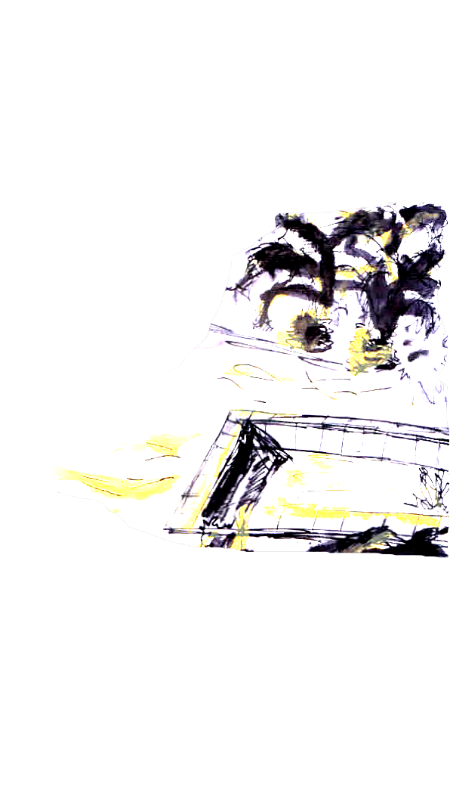

Textos de Carta del Errante
Se trata, una vez más, de la poesía y de la realidad. No he salido todavía de esta querella. Pero, ¿quién ha olvidado el bello teorema de Rimbaud: “el arte es una tontería ? [1] ¿La fiesta de Saint-Paul-Roux? y, más aún ¿El testimonio imborrable de Germain Nouveau?
En el fondo, el debate sobre la poesía y la realidad -en el cual el futurismo regló el acto provocación, exasperado más tarde por Dada, y ahondado por el surrealismo- dista de estar aclarado.
¿Qué poeta, después de ellos, puede, verdaderamente, soslayar una tal cuestión? Se ha querido trascender la literatura, la “obra de arte”, las prisiones de la estética, y, a pesar de todo, se ha permanecido y se permanece todavía hoy en el poema, en el cuadro y en el objeto. ¿Cómo podrá evitar el Surrealismo - y esto ocurre ya - ser clasificado en las bibliotecas, y quizás un día - porqué no - en las antologías escolares?
LA POESÍA ES FIESTA
Me digo: es necesario obedecer al acto poético con y a pesar del mundo para desencadenar la Fiesta. Y la Fiesta es el juego, supremo rigor de mi libertad. Tal es la misión del poeta porque el mundo debe ser siempre reapasionado.
Un día, he visto al poeta mezclado al mundo, fuera de su sepultura, horriblemente libre entre las gentes. Descubridor de realidad entre los órdenes convenidos, instrumento de su acto que hace su canto. Canto en el mundo, codo a codo en las rutas, en todas las esquinas prohibidas y permitidas. Y más aún en el paisaje y la naturaleza puesto que él es creatura –el acto abierto al cosmos. Sin enemigos ni obstáculos posibles. ¿Su virtud? El coraje, tal como Hölderlin nos lo ha dicho en su admirable “Dichtermut”.

EL POETA Y EL MUNDO
Pero el poeta es también un hombre. Entonces ¿cómo vivirá? No tiene oficio, él oficia. El mundo puede humillarlo o sostenerlo. Eso no le concierne. Celebrante, no juzga ni quiere ser juzgado. Es el mundo quien se juzga a sí mismo agobiándolo o glorificándolo. Su misión es autónoma e indestructible porque es necesaria. Pase lo que pase, la fiesta continúa. No tiene nada que temer, y aún si lo peor ocurre, podemos estar seguros que “otros horribles trabajadores vendrán”.
LA REBELIÓN
La idea generosa de rebelión y la sed de eficacia han fracasado: han terminado en la práctica política, en el “mientras tanto” o en la vuelta al poema. Ellas han creado la dependencia. Todo manifiesto, humor negro, acto-provocación revela la dependencia al objeto, atacado o negado. Pero la poesía no necesita atacar sea lo que sea. Ella afirma y revela. La afirmación supera toda negación. La revelación abandona en la sombra un montón de cosas acordadas al mismo tiempo que muestra nuevas.
He visto al poeta que muestra el mundo porque él se desnuda. Su acto revela el paisaje, las gentes, las relaciones de hombres y cosas. Portador de fiesta, él es portador de probabilidades porque, con su presencia desencadena relaciones imprevistas y provoca la participación activa en los Juegos a fin de dar cumplimiento a lo que nos fue dicho: “La poesía debe ser hecha por todos. Y no por uno”. Y puesto que su acto es libre de toda dependencia al mundo, es siempre el regalo, presente poético que conmueve y consuela. El soporta la alienación del hombre contra sí mismo.
La poesía en acto surge y se inserta verdaderamente en la realidad. Desvela la posibilidad que funda toda existencia efectiva y al mismo tiempo se hace acto en el mundo. He visto entonces al poeta salir de la literatura, sobrepasar el poema, y aún, abandonar la escritura.